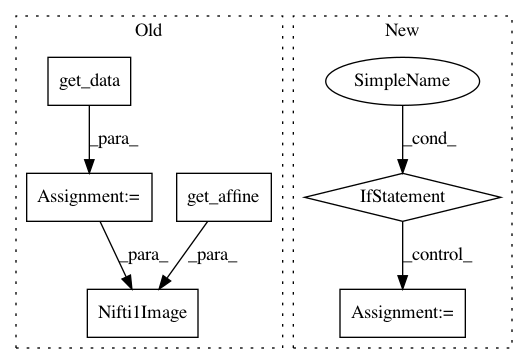

dc30d1f385bb6fc231880605e7b35afd56d64c6d,nisl/io/nifti_region.py,NiftiLabelsMasker,transform,#NiftiLabelsMasker#Any#Any#,155
Before Change
niimgs = utils.check_niimgs(niimgs)
data = utils.as_ndarray(niimgs.get_data())
affine = niimgs.get_affine()
if self.smoothing_fwhm is not None:
// FIXME: useless copy if input parameter niimg is a string.
data = self._cache(masking._smooth_array, memory_level=1)(
data, affine, fwhm=self.smoothing_fwhm, copy=True)
region_signals, self.labels_ = self._cache(
region.img_to_signals_labels, memory_level=1)(
nibabel.Nifti1Image(data, affine),
nibabel.Nifti1Image(self.labels_data_, self.labels_affine_),
background_label=self.background_label)
After Change
niimgs = utils.check_niimgs(niimgs)
if self.resampling_target == "labels":
niimgs = self._cache(resampling.resample_img, memory_level=1)(
niimgs, interpolation="continuous",
target_shape=utils._get_shape(self.labels_img_),
target_affine=self.labels_img_.get_affine())
if self.smoothing_fwhm is not None:
niimgs = self._cache(image.smooth, memory_level=1)(
niimgs, fwhm=self.smoothing_fwhm)
In pattern: SUPERPATTERN
Frequency: 3
Non-data size: 6
Instances
Project Name: nilearn/nilearn
Commit Name: dc30d1f385bb6fc231880605e7b35afd56d64c6d
Time: 2013-05-27
Author: philippe.gervais@inria.fr
File Name: nisl/io/nifti_region.py
Class Name: NiftiLabelsMasker
Method Name: transform
Project Name: nilearn/nilearn
Commit Name: b7d99dc4d489ff2ec135606cbfa46ce0288fed21
Time: 2014-07-02
Author: gael.varoquaux@normalesup.org
File Name: nilearn/plotting/slicers.py
Class Name: BaseSlicer
Method Name: init_with_figure
Project Name: nilearn/nilearn
Commit Name: 530e3ca9148a36982c110007c081a571eff660e1
Time: 2013-05-27
Author: philippe.gervais@inria.fr
File Name: nisl/io/nifti_region.py
Class Name: NiftiMapsMasker
Method Name: transform